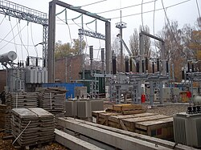

Надійне енергозабезпечення міської інфраструктури
ДетальнішеТрансформаторна підстанція 110/35/10 кВ призначена для прийому електроенергії високої напруги 110 кВ, її трансформації та подальшого розподілу споживачам напругою 35 кВ та 10 кВ.
Підстанція забезпечує електропостачання житлових районів, промислових об'єктів та соціальної інфраструктури міста Києва.

Трансформаторна підстанція
63 МВА
110/35/10 кВ
м. Київ, вул. Енергетична, 15
| Параметр | Значення |
|---|---|
| Тип | Трансформаторна підстанція |
| Номінальна потужність | 63 МВА |
| Вхідна напруга | 110 кВ |
| Вихідна напруга | 35 кВ / 10 кВ |
| Місцезнаходження | м. Київ, вул. Енергетична, 15 |
м. Київ, вул. Енергетична, 15